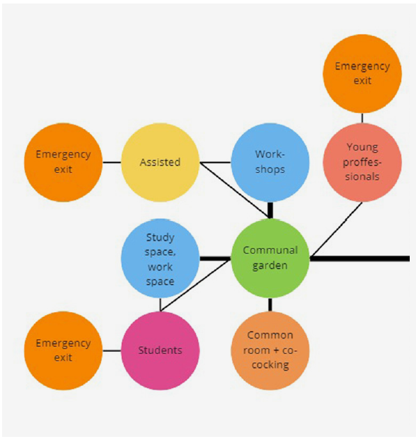
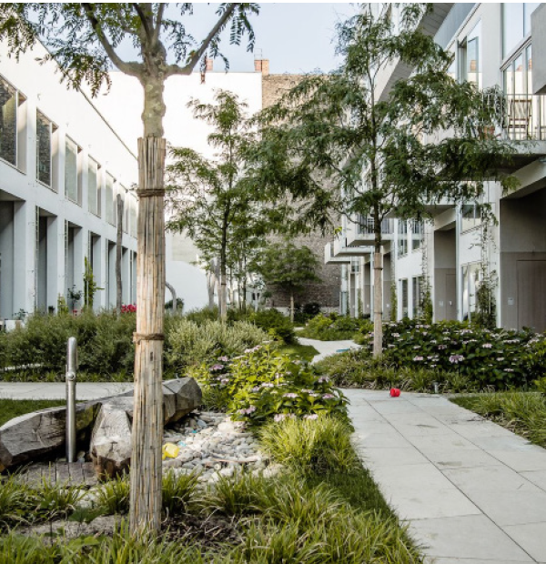
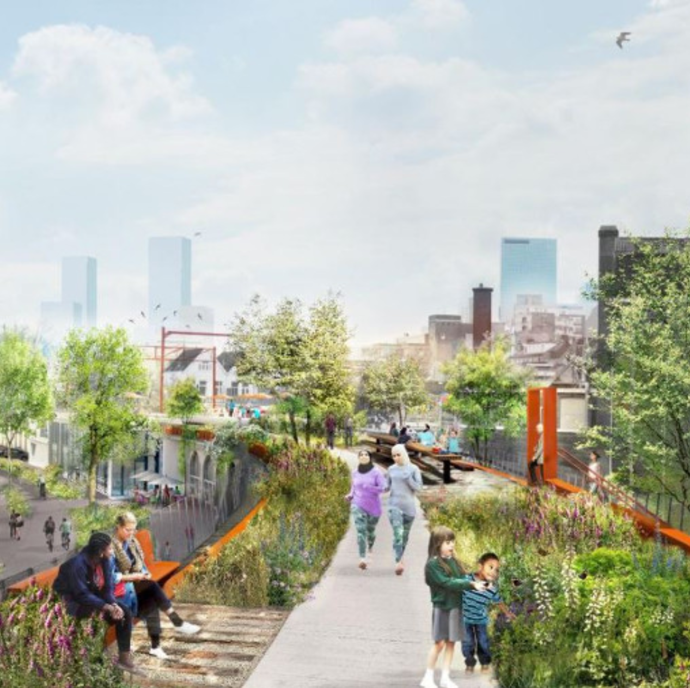

Process
This is our process and product of the 1st activity: Planning
| Title | Planning (process): Programme of Requirements & Network (product) |
|---|---|
| Objective | Formulate the design problems, form a programme of requirements, form a network, formulate your design principles and the idea (spatial sequences/experience/stories visible in a network). |
| Procedure | Describe the hierarchy of design decisions, formulate design goals, define design principles, identify stages in the design process that could be supported by algorithms, draw a flowchart to reflect on these steps and their connections and update it every week. Develop a programme of requirements, an idea (encapsulating the added value of the building and what is going to be unique about it in terms of human experiences) and a corresponding network indicating the main trips inside the building to be facilitated by direct connections matching with the scenarios envisaged in the idea. Formulate the design principles indicating what is a good shape for the building given operational, climatic, or structural aspects. |
The brief
The design problems
The objective for this course was to develop and create housing, work and recreational spaces. This has to be done in a way that is both beneficial to the users and neigbouring community, while also taking sustainablity into account.
Programme of requirements
The design brief states that the plot in Rotterdam, The block between Vijverhofstraat, Zomerhofstraat, Schoterbosstraat, and Teilingerstraat is to be redeveloped. Here we could choose between the compulsory or optional plot as shown in the figure below.

The brief given could be alterted to some extend, so we changed it to the following:
-
Housing:
- Student housing 80 units
- Assisted living 30 units
- Starter housing 100 units
-
Communal Spaces:
- Underground parking (0.5 parking lots per apartment or more)
- Communal garden
- Workshop
- Common room (co-cooking)
- Study space
- Bike parking (1 per resident)
-
Public Spaces:
- Shared car parking
- Hub
- Community center
- Librairy and music rooms
- Offices
- Gym
- Makerspace
- Shop(s)
- Coffee corner
- Restaurant(s)
- Bike parking
The development
Our vision
Having visited the site and conducted research on the context and local communities, we stated a vision for the plot itself and how the plot would fit in the larger urban scale. We sought to adress some of the most pressing issues in Rotterdam nowadays : housing shortage and sustainability. Our vison is as follows :
Densify the city with sustainable living and working space, which benefit both the user and neigbouring community, with tailored modular and flexible units.
Design goals
-
Creating clusters
The residential functions are clustered around their preferred communal node (for example, the study space). This way they are more accessible to those that use them the most, while also separating the users with different lifestyles.  -
Separating public/private
A privacy gradient ensures separation between the public and private areas inside the building, while in between communal areas serve as transition. This way the residents can enjoy a peaceful and quiet living space, without them having to worry about noise or compromised privacy.
-
Outdoor Garden
All residential units are connected to the central communal garden. This way, they all have access to a pleasant open and green area to relax in. Furthermore, commuting through it stimulates encounters between neighbours
-
Activating the street
The Vijverhofstraat is ‘activated’ with opportunities for people to dine and shop there. this aligns with the city’s plan to turn the old metroline into a ‘Highline’. This contributes to the amount of visitors and significance of the area.
Network
The first step of design involved creating a network graph reflecting main trips inside the building based on our design goals.
While designing the graph and human experiences reflected by it, we referred to our 1st design goal and conciously clustered the residential functions around communal nodes that are most relevant to the resident group.

Implementing the 2nd and 3rd design goals of creating gradients between the public and the private, the residents' living spaces and communal spaces are centered around the more quiet and peaceful garden, while the more public functions are centered around the hub.
Shops and restaurants are not directly connected to the Hub or the Garden but to the street. This way the most public area is distinguished distinguising
we're inviting people to dine and shop in the very public and lively part of the building. This aligns with the 4th goal of activating the street.
The 4th design goal of activating the street is